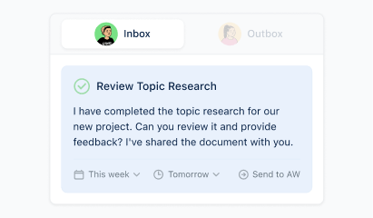
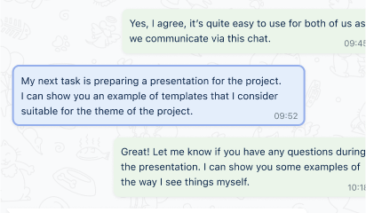
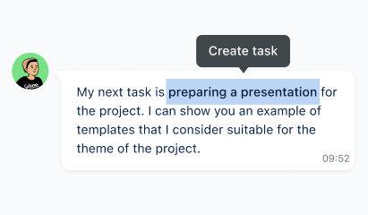
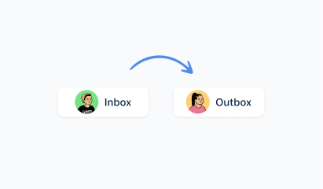
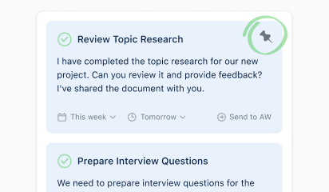
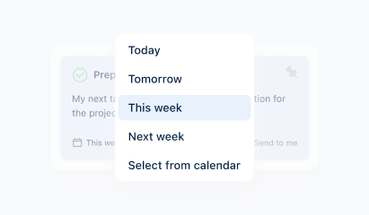

Chat with the manager
is your inbox with him.
Manage tasks where you got them. VA spends up to 20 hours a month copy-pasting tasks. Every hundredth task is lost when moving between inboxes.
-
No copy-pasting
No need to spend time copy-pasting tasks between a bunch of different tools and risk losing one of them.
-
Simple interface
Chat in the usual messenger. What is easier? You do not need to get used to the new tool and train the manager.
-
Everything for two
Task managers make things difficult because they are made for everyone. We investigated the work of VA to provide what the two need.
-
Simple and safe
No computer installations - only a browser is needed. All data is stored in the messenger, we do not have access to it.
Tool helps VA manage tasks
without unnecessary complications
-

Each manager has his own inbox
No more confusion between inboxes, tasks and managers. The inbox contains only those tasks that were set by a specific manager and specifically for you. No mixup.
-

Quick task context search
Now you do not need to scroll the chat to find task discussions or refresh agreements. Just one click on the task, and all the details are on the screen. It’s handy.
-

Create tasks in one click
Turn messages into tasks instantly so you don't miss anything. Details can be added later. As fast as it can be.
-

Delegation in a couple of minutes
Forward the history of correspondence with the manager to a colleague so that he himself understands what is the point. There is no need to waste time on discussions and accesses.
-

Important tasks are always on the screen
Keep important tasks at the beginning of the inbox so you don't lose sight of them throughout the day.
-

Prioritization of tasks that is clear to everyone
Differentiate what is important, and what is urgent. Show your manager the tasks by priorities.
The first 100 will get it
forever free! Apply now!
The product is currently in test mode.
This means that it is important for us to make sure that the product is put to good use, and we have the opportunity to invite the user to an interview to ask an opinion in exchange for a reward.
It is not a fact that we will invite you in particular, but we reserve this right. Please feel in the form to apply.